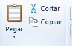
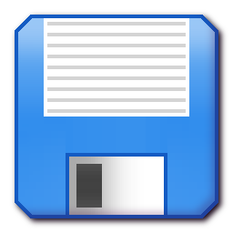
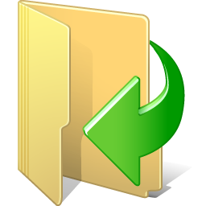

Ya hemos visto en qué consiste Wordpad, y cómo podemos empezar a utilizarlo. Vamos a continuar comentando las características que no hemos visto hasta ahora:
Copiar/cortar y pegar texto. Técnica básica de la informáctica que nos permite trasladar bloques de texto de un documento a otro.
Deshacer/rehacer.
Almacenar documentos. Para que podamos enviarlos por correo a otras personas, imprimirlos, o continuar trabajando con ellos posteriormente.
Copiar/Cortar/Pegar
En el uso cotidiano de los ordenadores personales, el copiar y pegar (junto a la acción de cortar) son el paradigma en cuanto a la transferencia de texto, datos, archivos u objetos desde un lugar de origen a uno de destino.
El uso más aceptado y generalizado de estos comandos se da en los entornos de los editores de texto siendo una herramienta fundamental para componer y reorganizar todo tipo de escritos.
Ejemplo de cortar/pegar
Cómo funciona la técnica

Se selecciona el texto que queremos mover/duplicar. Mediante el ratón, tal y como vimos la clase anterior.
Se elige la opción deseada desde la barra de herramientas. Copiar o pegar.
Se posiciona el cursor de edición donde queramos situar el texto. Mediante el ratón, llevamos el cursor a la posición deseada.
Pulsamos el botón de pegar de la barra de herramientas.
Deshacer/Rehacer
Siempre que escribimos texto en WordPad, hay una memoria que almacena todos nuestros pasos. Podemos volver a un estado anterior si nos hemos equivocado. Por ejemplo:
Sin querer borramos un párrafo. No es problema, deshacemos y volverá a aparecer el texto.
De momento nos damos cuenta que hemos tomado un mal camino en nuestro documento. Podemos volver atrás tantos pasos como queramos.
Limitado. Sólo podemos deshacer aquello que no hemos guardado. En cuanto guardamos el documento, ya no podemos deshacer.
Ejemplo de deshacer/rehacer
Guardar documentos

Despues de haber redactado un documento, si apagamos el equipo perderemos toda la información. ¿Por qué pasa esto y cómo solucionarlo?
La memoria de trabajo del ordenador es volátil. Mientras realizamos un documento todo se almacena en una memoria que se vacía cuando apagamos el equipo.
Memoria persistente. Si queremos guardar nuestros documentos, deberemos guardar explícitamente aquellos documentos que queramos para poder volver a acceder a ellos posteriormente.
Cambia de foto con las teclas: ↑ y ↓
Guardar documentos
Para guardar un documento debemos elegir una ubicación y un nombre de documento.
Ubicación. Es la carpeta donde se guarda el documento. De momento no la cambiaremos, utilizaremos la biblioteca Documentos.
Nombre. Es el nombre de documento que describe nuestro trabajo.
Cambia de foto con las teclas: ↑ y ↓
Abrir documentos

Para abrir un documento previamente guardado, seguimos un proceso similar.
Abrimos Wordpad. Nos aparecerá un documento en blanco.
Pulsamos el icono de "abrir documento"..
Del selector de archivos, seleccionamos nuestro documento.